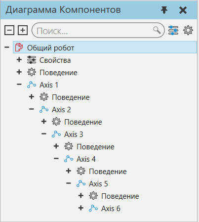
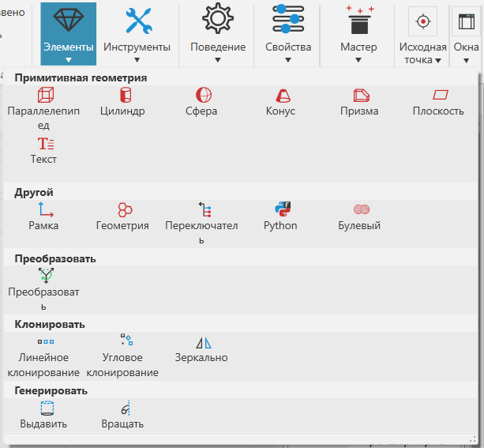

Создание нового элемента |
|
Геометрия в компоненте формируется в наборы, которые сгруппированы в элементы. Не все элементы содержат геометрию или действуют как примитивные формы. Некоторые элементы выполняют операции над другими элементами, в то время как другие типы элементов генерируют данные, связанные с трехмерным миром. Элементы содержатся в узлах и имеют собственную древовидную структуру. На панели Диаграмма компонента верхняя панель показывает дерево узлов компонента, а нижняя панель показывает дерево элементов узла. Это означает, что в дереве компонентов узлов отображаются только элементы узла, выбранного в дереве узлов компонента. 1.Либо создайте, либо выберите компонент в 3D-мире. 2.Нажмите на вкладку Моделирование, а затем в панели Диаграмма компонента в Дереве узлов компонента, выберите узел. Это определяет узел, содержащий любой новый элемент, который вы собираетесь создать в компоненте (корень Дерева узлов компонента является корневым узлом и как правило так же содержит геометрию). 
3.На вкладке Моделирование, в группе Геометрия, щелкните стрелку Элементы, а затем щелкните тип объекта, который вы хотите создать в выбранном узле.  |